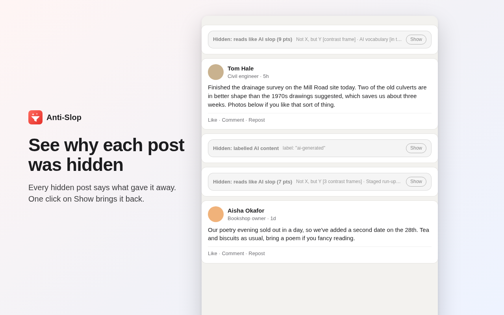

Slop is slop.
AI has its uses. Filling your feed with posts nobody really wrote is not one of them. Anti-Slop hides them on X, LinkedIn, TikTok and Instagram, so you see what people actually have to say.
Free. Works in Chrome, Edge, Brave and other Chromium browsers.
How it works
AI labels
If the platform or the poster marks it as AI ("Made with AI", "AI info", #aiart), it goes.
AI writing
22 tell-tale patterns, such as "it's not X, it's Y", emoji bullet lists and "let that sink in". Enough of them and the post is hidden.
Your words
Add any word or phrase you're sick of. Posts that use it are hidden too.
You stay in charge
Each hidden post leaves a one-line note saying why. Click Show to read it anyway.
Set how strict it is, switch off any signal, or turn it off for a site. It reads writing, not minds, so it won't be perfect.

Your feed stays yours
- Every post is checked inside your browser. No post, link, name or account leaves your device.
- No AI model is called. Nothing costs anything.
- The only thing shared is a daily count of hidden posts, like
LinkedIn · AI-sounding · 14. There's no ID, and one tick turns it off.